OSIR basics
Overview
OSIR is a Python project designed for the automated processing of data using modules and profiles. It is primarily aimed at handling forensic artifacts but can be utilized for any type of files. OSIR acts as a scheduler, applying processing tools to files, where the output of some tools can serve as input to others.
Features
Modular Design: Easily integrate new tools without writing code by using YAML configuration files.
Containerized: Fully containerized architecture for seamless deployment and management.
WebUI: Integrates an optional web UI to manages processing jobs.
Multi-OS: OSIR can run on Windows via WSL2 and on a Linux host.
Components & Terminology
Master: Monitors a directory (called “case”) containing files to be processed and creates processing tasks for the agents.
Agent: Processes tasks issued by the master and interacts with other components like the Windows machine or Splunk depending on the tasks.
Splunk (Optional): Can be deployed locally on the same host as the master or remotely.
Windows Box (Optional): Can be deployed locally on the same host as the master or remotely. Two ways of deploying automatically a Windows VM are currently supported: using vbox and Vagrant or using Dockur (Windows in Docker). If running OSIR agent on a Windows host, there is no need to deploy a Windows VM, the host itself is used.
Processing job: Action of processing a case containing files to process. Handled by master.
Processing tasks: Processing action decribed by a module configuration file, taking in input a directory or file and applying. Handled by agents.
Architectures
Note
The architectures depicted below can be mixed and adapted to fit your needs. For example, you can deploy multiple agents, use a single Windows box for several agents, and more.
All in one - LINUX HOST
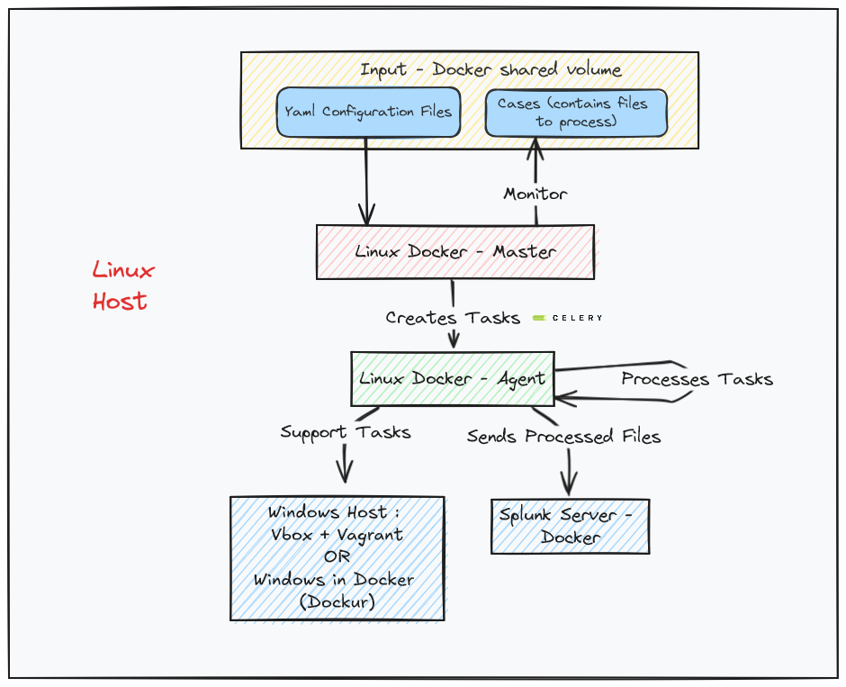
All in one - WINDOWS HOST
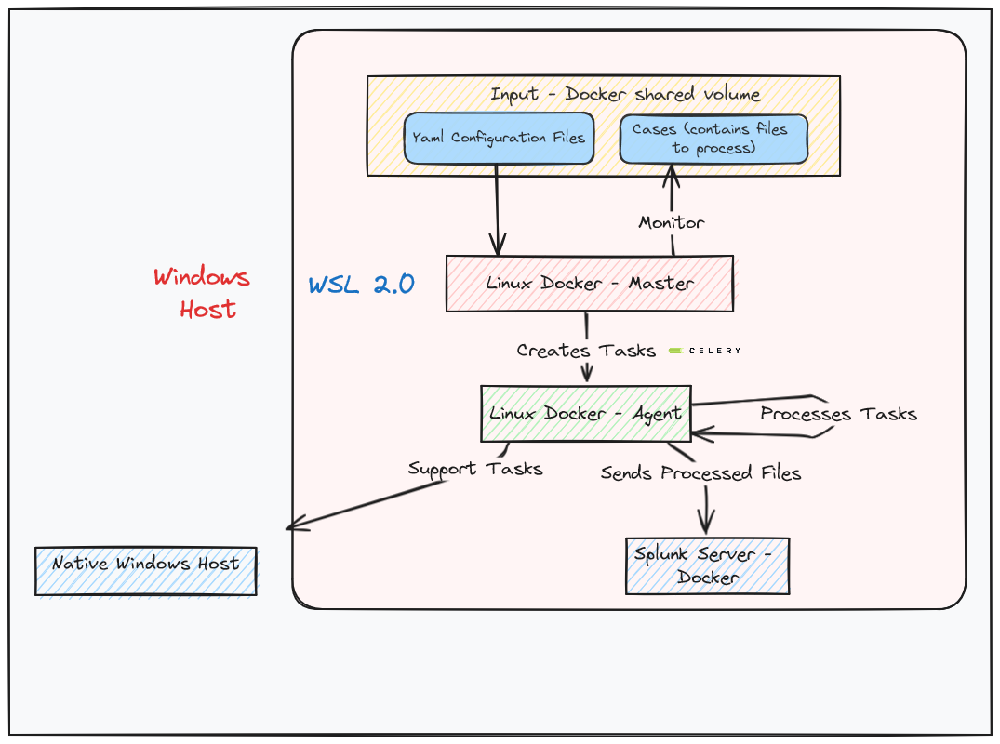
Distributed agents
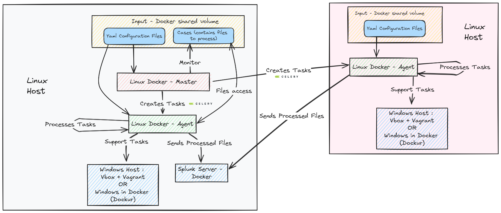
External Splunk and Windows hosts
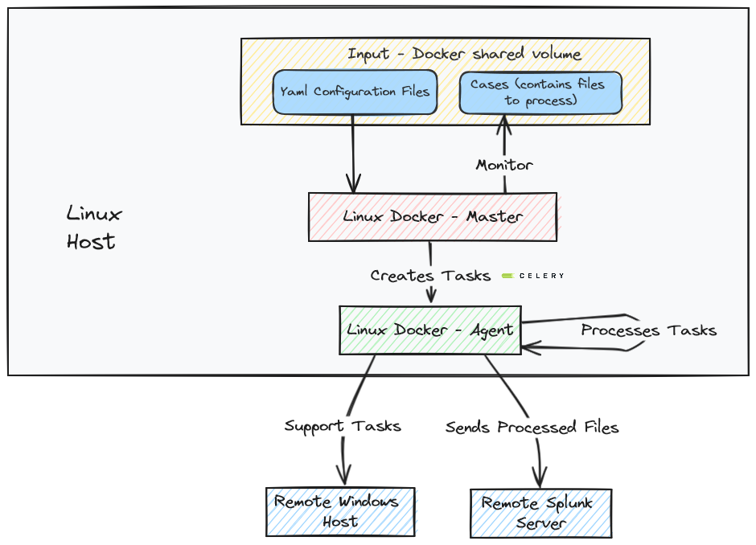
Network flows
All in one host
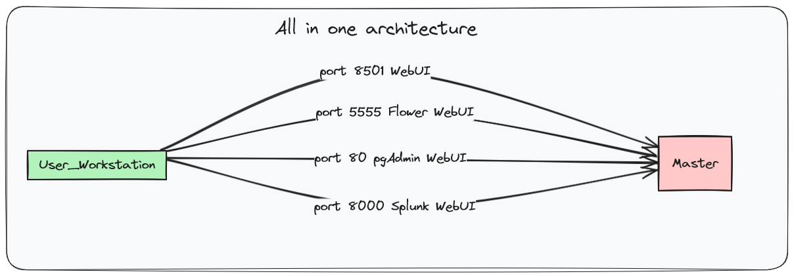
External agent and remote Windows box
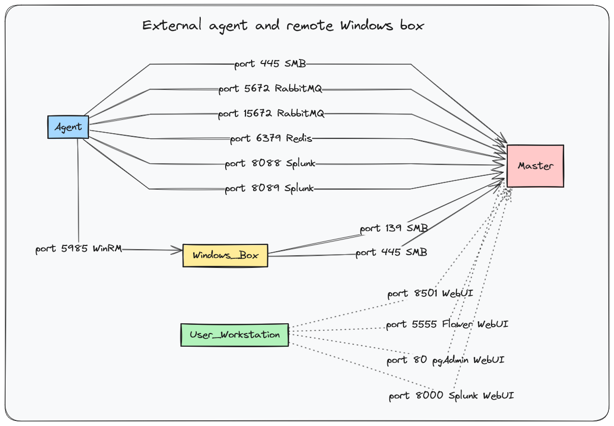
External agent, remote Windows box and external Splunk
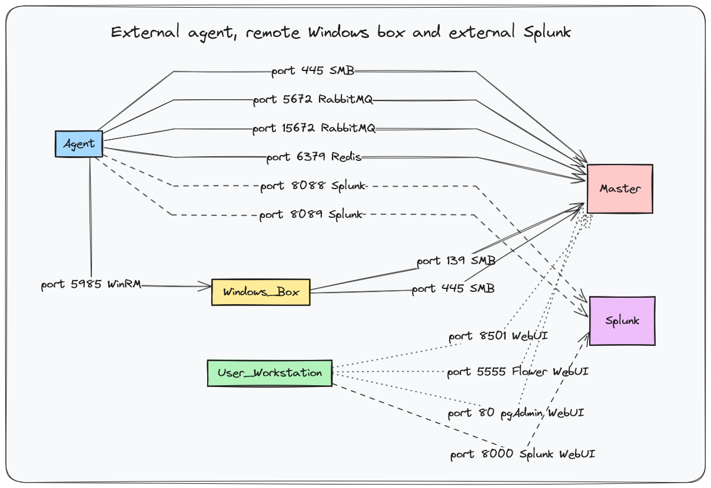
Getting Started
Prerequisites
Use Case 1
You have a Linux host (not a VM) and you need everything to run on this single machine.
Theses requirements are needed:
Docker
Docker Compose
- If you need to run Windows tools, there are 3 possibilities:
- OSIR sets up a VM with Vbox and Vagrant automatically, so you need :
Vagrant (installed automatically if needed)
Virtual Box (installed automatically if needed)
Enough disk space for a Windows VM (50GB)
OSIR sets up a VM in Docker (Dockur project), so you only need dockur and around 30GB of disk space
- You already have a Windows VM, so you need :
An admin account
Winrm enabled
Networks flows described in the nexts sections
Use Case 2
You have a Windows host (not a VM) and you need everything to run on this single machine.
Warning
OSIR can be used on Windows system for all in one mode (server and agent on the same machine) and agent mode but not in server mode for distributed architecture.
Theses requirements are needed:
WSL 2
Docker installed in your WSL 2 VM
Docker Compose installed in your WSL 2 VM
Linux host
Networks flows described in the nexts sections
Use Case 3
You have want to setup a distribued architecture with a server and multiples agent. - OSIR server can installed on a Linux host, even a VM but not in WSL - If you need to run Windows tools, each agent must have a Windows box configured, a single box reachable from each VM can be used. - Networks flows described in the nexts sections
Warning
Only basic use cases are described but OSIR can be configured in many other ways.
All in one deployment
This guided example will demonstrate how to setup the solution and how to use it. For the example, All in one architecture is used.
Clone the repository:
git clone --recurse-submodules https://github.com/maxspl/OSIR.git
Network requirements
Important
Make sure that the following ports are not currently in use :
80: pgadmin to administrate the postgres Database
5432: postgres Database
5672: AMQP protocol
15672: rabbitmq Management interface
6379: Reddis
5555: Flower
139: SMB used to access file from Windows box or remote agent
445: SMB used to access file from Windows box or remote agent
8501: Main Web interface
8000: Splunk web interface
8089: Splunk services interface
9997: Splunk event listening port
8088: HEC port for Splunk event forwarding
8502: FastAPI
OSIR Launcher
OSIR now uses a unified launcher named osir-launcher.py.
This tool replaces previous bash scripts and manual container commands.
Display global help:
python3 osir-launcher.py -h
Example output:
usage: osir-launcher.py [-h] {start,stop,status} ...
Unified OSIR launcher.
positional arguments:
{start,stop,status}
start Install and start components
stop Stop master or agent
status Show OSIR status
airgap Air-gapped workflow (export/load docker images)
Commands Overview
start : Install and launch OSIR components
stop : Stop running components
status : Check if OSIR processes are running inside containers
airgap : Export docker images to prepare offline setup and load them afterwards
You can also view help for the start command:
python3 osir-launcher.py start -h
Which displays:
usage: osir-launcher.py start [-h] {master,agent,all} ...
master Install and start the MASTER component
agent Install and start the AGENT component
all Install and start both MASTER and AGENT
All-in-one installation and start
OSIR can be installed and started in a single command using the launcher.
cd OSIR
python3 osir-launcher.py start all
This command will:
Install MASTER and AGENT if not already configured
Start required containers
Launch OSIR processes automatically
Warning
The first execution can take time because Docker images, dependencies, and the Windows VM for the Agent may be downloaded.
Checking OSIR status
You can verify if OSIR components are running with:
python3 osir-launcher.py status
The launcher prints an overview table and performs two checks per component:
Container check: verifies the Docker container is running
Process check: verifies the expected OSIR process is running inside the container
Expected processes inside containers:
master-mastermust runOSIR.py --webagent-agentmust runOSIR.py --agent
Status meanings
- UP ✅
The container is running and the expected OSIR process is running inside it.
- DOWN ❌ (container not running)
Example:
Agent process check : DOWN ❌ (container not running. Start it using OSIR_launcher.py start command)This means Docker containers are not up yet (or were stopped). Start everything again with:
python3 osir-launcher.py start all
- DOWN ❌ (process not running inside container)
Example:
Master process check : DOWN ❌ (start master using OSIR.py --web inside master-master container) Agent process check : DOWN ❌ (start agent using OSIR.py --agent inside agent-agent container)
This means containers are running, but the OSIR processes inside are not. The recommended fix is to restart using the launcher:
python3 osir-launcher.py start all
Usage
From Unix host
Create a directory (referenced as a ‘case’ in the documentation) under OSIR/share/cases/:
mkdir OSIR/share/cases/my_first_case
Copy the files you want to process under OSIR/share/cases/<case name>
cp /tmp/DFIR-ORC_WorkStation_DESKTOP-BV01_Browsers.7z OSIR/share/cases/my_first_case
cp /tmp/DFIR-ORC_WorkStation_DESKTOP-BV01_General.7z OSIR/share/cases/my_first_case
cp /tmp/DFIR-ORC_WorkStation_DESKTOP-BV01_Powershell.7z OSIR/share/cases/my_first_case
cp /tmp/DFIR-ORC_WorkStation_DESKTOP-BV01_SAM.7z OSIR/share/cases/my_first_case
cp /tmp/DFIR-ORC_WorkStation_DESKTOP-BV02_Browsers.7z OSIR/share/cases/my_first_case
cp /tmp/DFIR-ORC_WorkStation_DESKTOP-BV02_General.7z OSIR/share/cases/my_first_case
cp /tmp/DFIR-ORC_WorkStation_DESKTOP-BV02_Powershell.7z OSIR/share/cases/my_first_case
cp /tmp/DFIR-ORC_WorkStation_DESKTOP-BV02_SAM.7z OSIR/share/cases/my_first_case
At this step, master and agent should be running.
Access the web UI and run the processing
Use a defined profile or select several modules
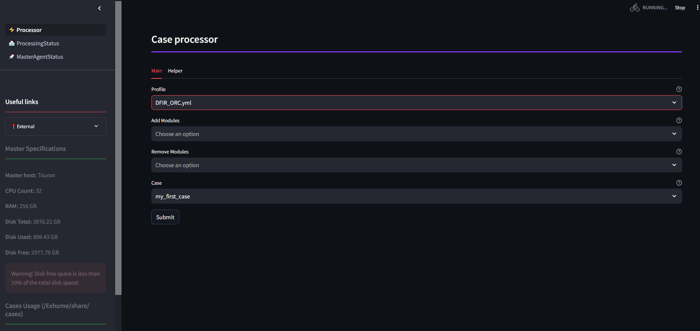
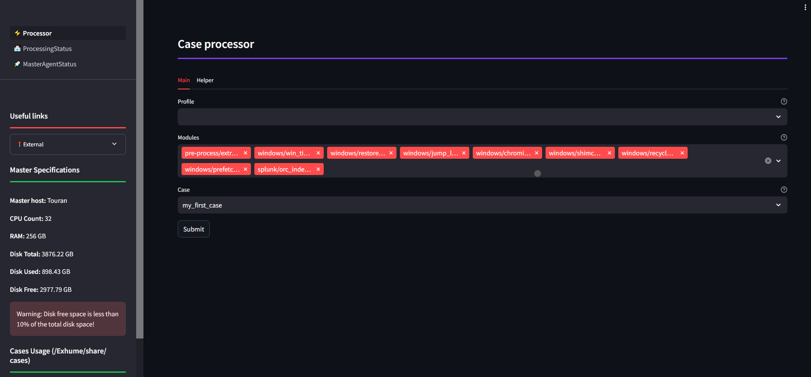
The processing tasks can be followed in ProcessingStatus pages:
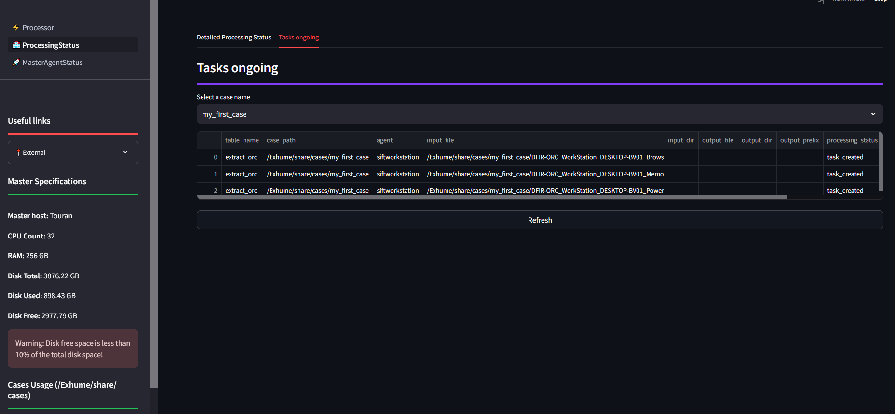
The processing job can be followed in MasterAgentStatus page:
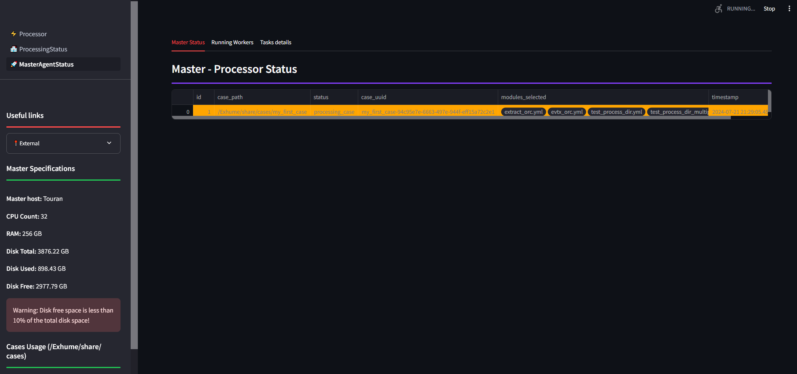
From Windows host
DFIR ORC triage
To parse a DFIR_ORC collection, create a new case, upload the DFIR_ORC archive and run either the chosen profile or a specific module:
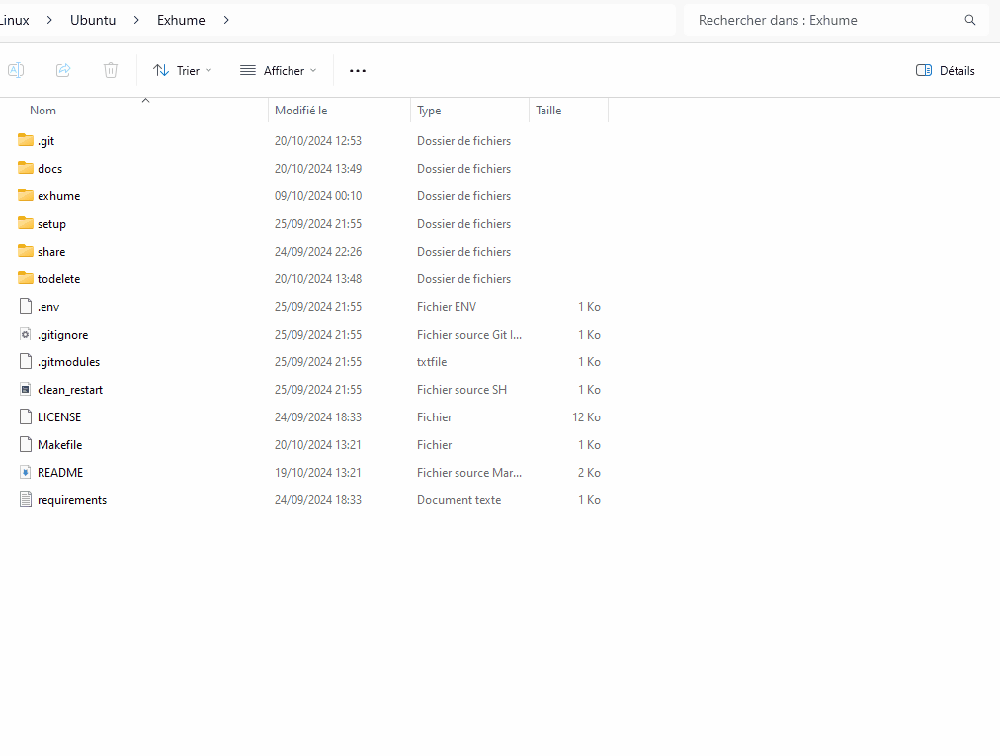
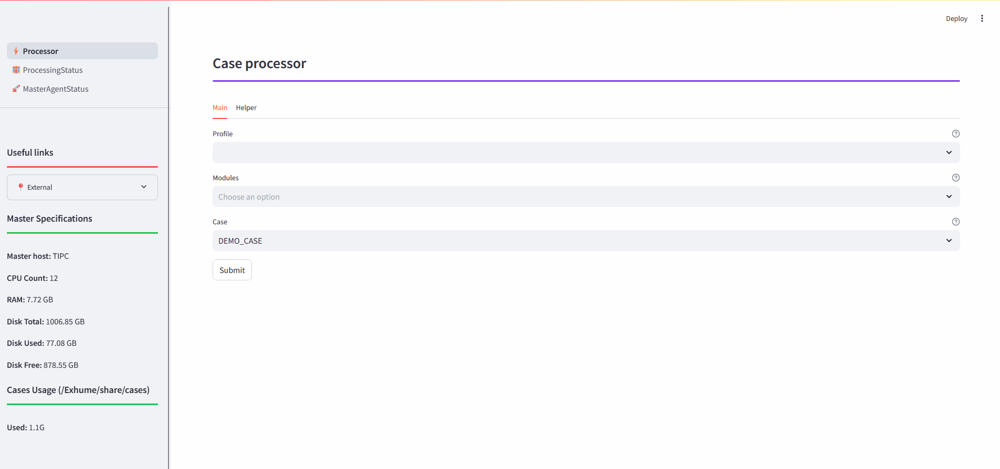
UAC triage
To parse a UAC collection, create a new case, upload the UAC archive and run either the chosen profile or a specific module:
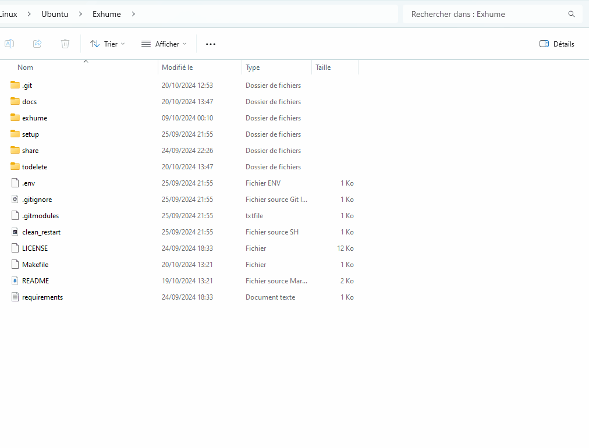
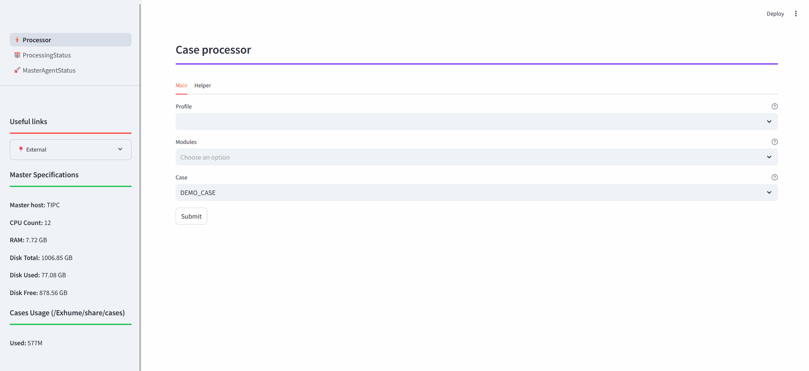
Stopping OSIR
OSIR components can be stopped using the launcher osir-launcher.py.
Show stop command help:
python3 osir-launcher.py stop -h
Stop MASTER
Stop the MASTER stack:
python3 osir-launcher.py stop master
Optional flags:
-i / –images: also remove docker images related to MASTER.
python3 osir-launcher.py stop master --images
Stop AGENT
Stop the AGENT stack:
python3 osir-launcher.py stop agent
Optional flags:
-v / –vagrant: also stop the Vagrant Windows VM (if used by the agent).
-d / –dockur: also stop Dockur-related services (if enabled/used).
-i / –images: also remove docker images related to AGENT.
Examples:
python3 osir-launcher.py stop agent --vagrant
python3 osir-launcher.py stop agent --dockur
python3 osir-launcher.py stop agent --images